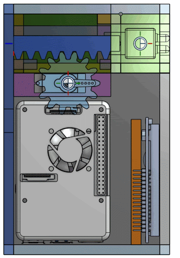
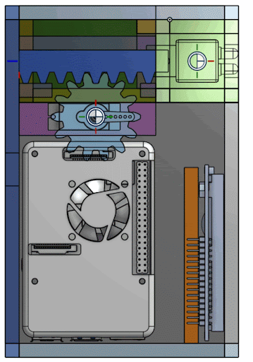

Candy Machine
An automatic Starburst candy dispenser
Project Overview
ECE Course Project
Duration: 3 weeks (May 2021)
Team: 2 members
My main role: CAD, circuit, software
Background: A Motivational Candy Dispenser
Most candy machines operate by turning the mechanism manually, while some have a touch-free sensor to automatically dispense the candy. However, these candy machines that you can buy in stores aren’t able to be programmed or controlled. When a student is finding it difficult to focus on their tasks, candy is a great to use for positive reinforcement after completing each task. In order to use this reward system effectively, we have to be able to control when the candy is dispensed. Rather than using coins to unlock and activate the candy dispenser, the student can check off tasks to dispense the candy.
People who lack discipline need an external source of positive reinforcement in order to help them keep on track with their goals or work.Initial Sketch
After deciding on using a rack and pinion mechanism for dispensing the candy, I started by drawing an initial sketch of the candy machine with my teammate. We laid out where all the components of the machine would be in order to figure out the overall shape of the container.

CAD Design
Next, I took our intial sketch and created a CAD model using Onshape. The CAD model includes all the dimensions for the components and the pieces for the container. I also simulated the rack and pinion mechanism (shown in the gif below) to make sure all the pieces moved as expected.
 

Circuit
The next part I worked on was the circuit. The diagram below shows all the circuit connections for the electronic components to the Raspberry Pi, including the servo, LCD module, IR sensor, button, and potentiometer. The photos below show all the wiring.


Assembly
From the CAD model, I lasercut acrylic for the pieces of the container. I used superglue to assemble all the pieces together, and then placed all the electronic components inside the container.


Software
After assembling the circuits and container, I programmed the Raspberry Pi to control all the different components. Below is a chart of the different parts of the software. The Todoist app sends a webhook to the Raspberry Pi through ngrok, which tells the Raspberry Pi that the user completed a task. The Raspberry Pi also listens for when the IR sensor is activated or when the button is pressed. The Raspberry Pi controls when the candy is dispensed based on all these inputs.

Final Machine
Here is the final candy machine in action!